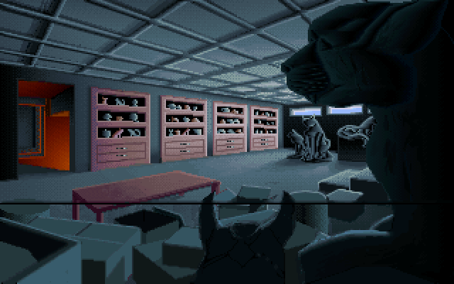
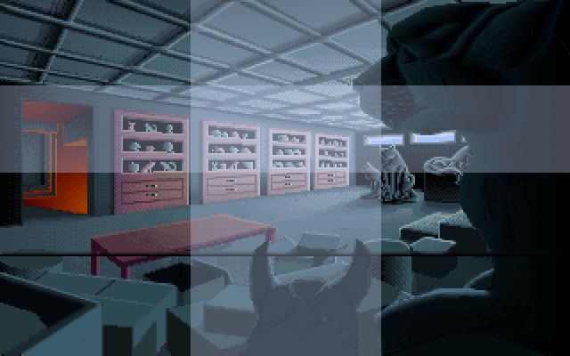
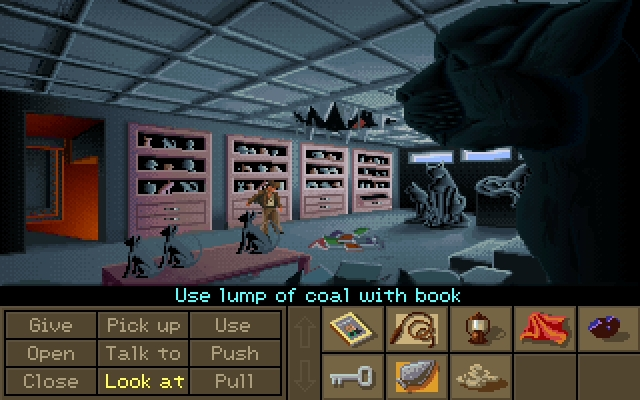
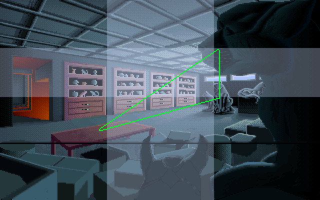
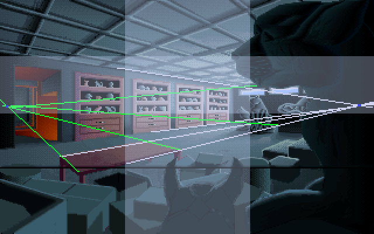
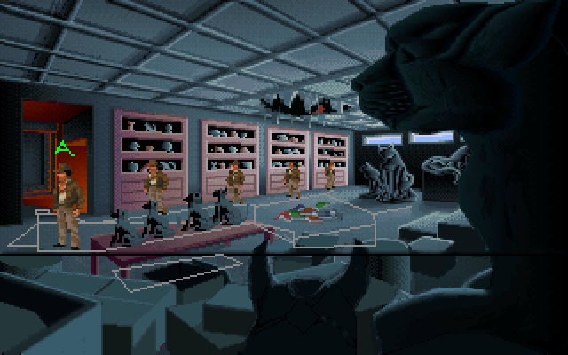
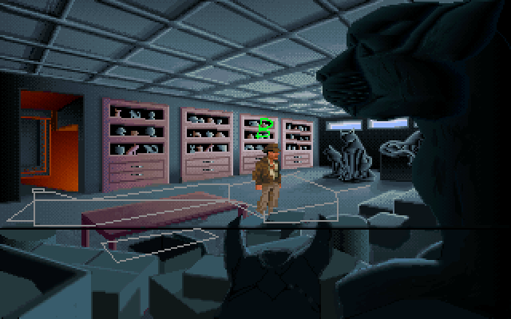

The next scene we are going to analyse in our Fate of Atlantis background analysis series is the Cat Room at Caswell Hall.

This scene plays a part in the intro sequence of the game. Most of the Indiana Jones movies start with an adventure sequence in some dangerous exotic location (even Utah is exotic to some people).
In Fate of Atlantis the intro sequence is right across the road from Indy’s office. Its not without its dangers though.
Its a pretty light sequence and eases the player into the way the game works.
This scene contributes to the atmosphere of that intro sequence, a scary yet urban place to explore and find trinkets.
I wanted to have a look at this one because I was having difficulty getting a 2 point perspective room to work.
Its got the following properties:

Observations:
Theres “stuff” in every single square of the grid to spread out the interest, even the ceiling isn’t entirely plain, with some kind of pattern on it, even if it isn’t an intricate design.
When Indy falls through the ceiling (image below) he falls from the central cell into the centre of the bottom-middle cell. The rule of thirds helps spread this stuff out rather than placing it in the middle of the scene.


I didnt really notice many triangles.
The cats form a triangle though:
The triangle spreads them throughout the scene, and putting the first two on the junction of thirds stengthens the focus on them.
All up the cats are enough to establish the room as a “cat room” even though everything else is pretty generic. Lets you do more with less.

The eye line is at about the same level as indy’s office.
This one however employs a 2 point perspective, the vanishing points as indicated in the image above.
The vanishing points are within the bounds of the frame, pushed out pretty close to the boundaries. This probably works well for a larger sized room where the far corner recedes pretty far into the image. Moving the camera closer to the corner would mean the vanishing points would fall outside the bounds of the frame.
 
The scaling here works pretty well, you see Indy standing next to each of the shelves, and he looks about the same height relative to each one.
Its nice that they lined it up really well, but generally viewers dont really notice if the scaling doesn’t line up with the perspective 100%, theres generally a bit of tolerance before it becomes a bit jarring for the player.
Afterall, trying to get the character scaling in a game like Day of the Tentacle make sense when the Chuck Jones-esque art style bends the laws of perspective so hard would be impossible.
In cases like that though, the player notices to some degree and its part of the charm of the art style.
The important thing is that once again, at the spot within the walkboxes where Indy is as close to the camera as he can get, he is scaled at 100% (spots A and B). No upscaling.
The hues are predominantly blue and purple (getting pretty close to red at places). The overall feeling is a cool mood from those hues.
The area with the chute that leads down to the furnace room, however, does stick out, with the warm orange hue with higher saturation and value.